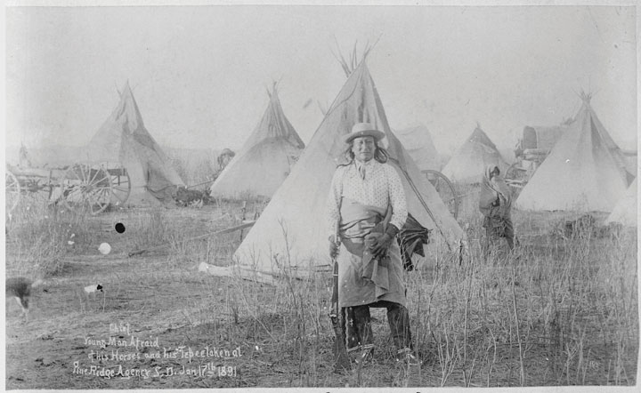
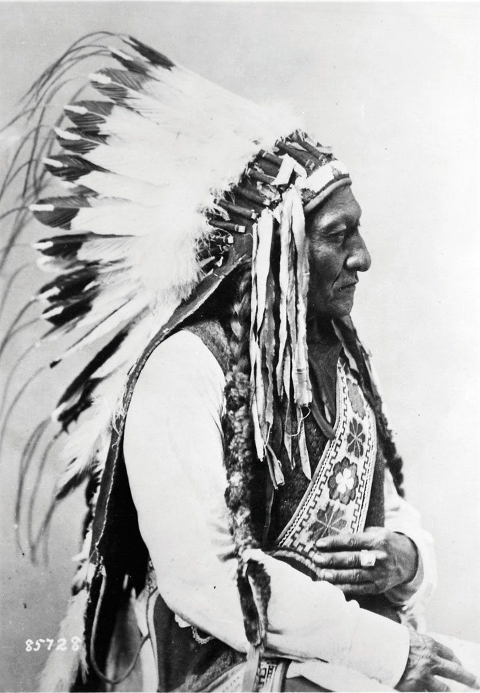
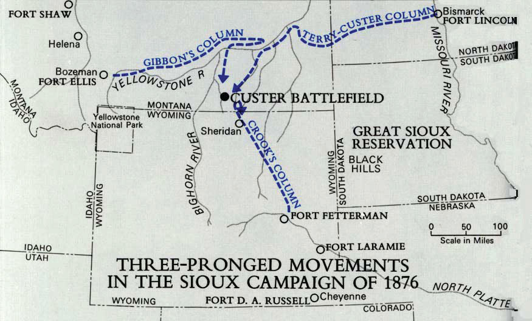
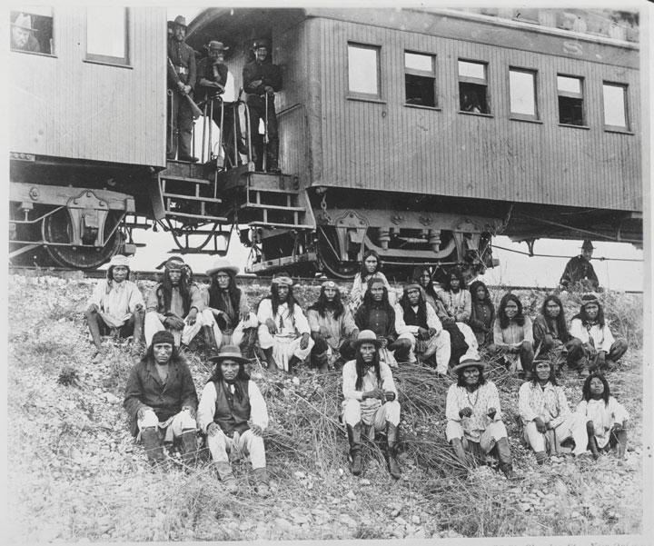
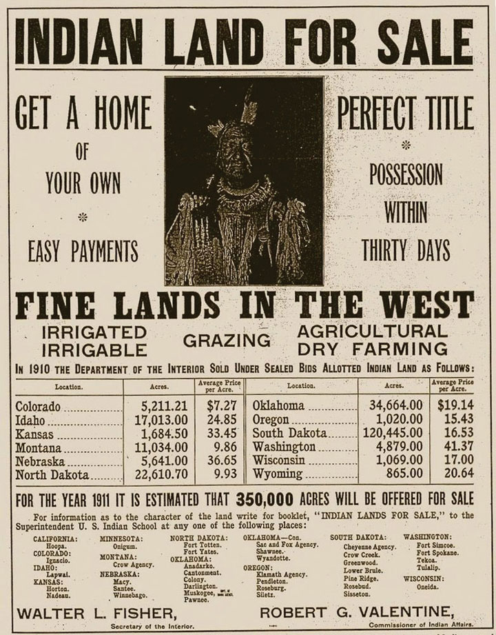

The land so coveted—both by those who were arriving in North America during the 1870s and 1880s and by the descendants of earlier immigrants—was part of an ever-shrinking Permanent Indian Frontier. The frontier stretched from the eastern Great Plains to the edge of the West Coast. These lands had originally been guaranteed to Native American tribes in exchange for their acceptance of their forced exclusion from lands east of the Mississippi River. Before the end of the Civil War, however, some of the original treaties with natives were being “renegotiated” to satisfy the wants of land speculators and fulfill the needs of landless farmers. In addition, little effort was made to coordinate the forced migration of Eastern tribes with those tribes that already occupied the Great Plains. As a result, numerous conflicts placed various tribes in opposition to one another in ways that reduced the likelihood of cooperation and Pan-Indian identity.
The Great Plains region was a melting pot long before settlers of Anglo, Asian, and African descent arrived in large numbers following the Civil War. The northern plains were home to a variety of tribes, many of whom were part of the great Sioux nation and spoke similar languages. The tribes of the central plains migrated throughout the region, while the Five Civilized Tribes of the southeast had been driven to reservations in present-day Oklahoma. Most tribes that were native to the Great Plains maintained migratory lifestyles, while some such as the Pawnee built and maintained lodges. Others such as the Cheyenne and Lakota Sioux had adopted the horse centuries before Anglo settlement and were migratory hunters of bison and other game.
Figure 2.1
An Oglala Sioux standing in front of his home on the Pine Ridge Reservation in South Dakota. This area was home to a diverse number of tribes, many of whom were not originally from the northern Great Plains.
Few Anglos perceived the differences between the various communities and tribal federations throughout the plains. Many also failed to recognize that groups such as the Pawnee and Lakota each contained many independent tribes. The misperception was not simply an accident. Recognition of the diversity and sovereignty of thousands of tribes stood in the way of the federal government’s goal of devising a few treaties that might bind all native peoples to its policy of removal. As a result, the practice of generalizing native life and culture within a given region is tangled within the exploitative practices of the past. While recognizing the liabilities of the task, the historian must still attempt to offer the public a basic overview of life on the plains prior to Western expansion.
Most native societies revolved around communal concepts of life and work that emphasized the tribe as an extended family. Natives constructed their own notions about the separate sphere between male and female roles in society and the family. In general, they established gendered concepts of work with certain tasks being divided among men and women. Many tribes were matrilineal, meaning that men were absorbed into their bride’s extended family network and women were recognized as leaders within the home. Women were deeply respected and in charge of many essential aspects of tribal life, such as farming and the home and hearth. Even in matrilineal societies, tribal leadership of religious and political activities was usually dominated by men. One exception was that women often held a prominent role in diplomacy, which was viewed as an extension of kinship.
Tradition, cooperation, and conflict typified native political life and determined the area a particular tribe inhabited. As a result, the idea of legal ownership of the land itself remained a foreign concept to most tribes. At the same time, natives adopted their own notions of land as property when the territories guaranteed to them by agreements with other tribes of treaties with the federal government were in danger. Violence between various groups of Native Americans was not uncommon and opportunities for conflict between tribes increased as more groups were forced westward. The result of each tribal removal led to conflicts between the new arrivals and Native Americans in the West regarding an ever-shrinking amount of resources and land.
The concept of communal rather than personal property, along with frequent migration of Plains Indians, eliminated the drive for acquisition that dominated the lives of Anglo settlers. These tribes had little incentive to plant more crops or kill more animals than they needed to survive. Although trade networks had operated for centuries, the nature of this trade changed rapidly following the arrival of Anglo settlers and modern transportation networks. What appeared as scarcity and privation to Anglos was a lifestyle that allowed natives to spend large portions of their day on their own terms. In fact, many natives considered their lives much richer than those who worked for a wage or spent their entire lives growing wheat for distant cities. Anglo settlers moved to the West in hopes of a better life, yet they enjoyed little time for family and leisure because they replicated the habits of acquisition that dominated their prior lives.
Only belatedly did some settlers recognize that Native American concepts of property and family might have enriched their lives. For example, in the 1920s a former cowpuncher recalled a conversation he had with a Sioux elder in the days before the extinction of the great herds of bison. The men shared a bottle and a fire, exchanging stories of their youths with the occasional nostalgia and creativity that usually accompany old men, whiskey, and campfires. The old ranch hand was deeply impressed by the life his Indian companion described. The days of the Sioux elder had been spent following buffalo herds and enjoying the day’s labor of hunting and fishing. The Sioux recalled his life and being full of time with his extended family with “no trouble or worries” beyond their daily needs, which nature provided for them. “I wish I’d been a Sioux Indian a hundred years ago,” the ranch hand reflected. “They’ve been living in heaven for a thousand years and we took it away from ‘em for forty dollars a month.”
Ranch hands like this cowpuncher were often hired to exterminate the buffalo herds and build fences to clear land for commodity-based agriculture. Because of these actions and the introduction of railroads, settlers, and new species onto the plains, the bison population dwindled from millions to a few hundred by the late 1870s. For native tribes whose economies were based around the bison, depletion of the herds represented an act of extermination. The destruction of bison was perceived as necessary by the government because it had already determined that the Great Plains should be divided and distributed to Anglo farmers. The railroad would connect these farms to the population centers of the East and West, creating a national market economy that was incompatible with roving bison herds and the natives who followed them.
In 1865, chairman of the Senate’s Indian Affairs Committee James Doolittle described the options regarding Native Americans as he saw them to a Denver audience. He argued that the best solution was to force natives onto reservations for their own “protection.” For Doolittle, the only other possibility was to exterminate the entire native population. As soon as he mentioned this opinion, the audience went wild. “There suddenly arose such a shout as is never heard unless upon some battlefield,” an observer recalled. “Exterminate them! Exterminate them!” The creation of such venomous anti-Indian sentiment made nearly any plan short of genocide appear progressive. As a result, the Bureau of Indian AffairsAn agency of the federal government established in 1824 and charged with the responsibility of managing Native American lands and meeting the treaty obligations of the US government. The bureau was notorious for its treatment of natives in its early history but attempts to be a more progressive organization that promotes tribal sovereignty while providing valuable services. was able to present the reservation system as an act of generosity and humanity.
Two major treaties were passed in 1867 and 1868, forcing many tribal leaders to accept the reservation system in exchange for the promise that this land would be theirs forever. The Medicine Lodge Treaty of 1867 forced the relocation of the Plains Apache, Kiowa, Comanche, Arapaho, and Cheyenne to lands in Indian Territory (present-day Oklahoma). The tribes were granted permanent ownership of these lands unless another treaty was made and three-fourths of a tribe’s adult male population approved the new treaty. The Medicine Lodge Treaty obligated the government to protect tribal lands from encroachment and provide certain payments and support for the development of schools and farms. In return, the signers (but not necessarily all of the various native tribes affected) pledged to peacefully abandon all claims on their present lands. They also promised to accept the construction of railroads and military posts in their new homelands while abiding by the decisions of federal agents assigned to them.
The Fort Laramie Treaty of 1868 granted ownership of land throughout northern Nebraska, the Dakotas, Wyoming, and Montana to the Lakota, Arapahoe, and Dakota tribes under similar terms. This treaty also obligated the government to provide material support, assistance with the development of agriculture, and resources for schools and other provisions. Unknown to the federal government at the time, the lands “given” to Native Americans in the Fort Laramie Treaty included valuable natural resources including gold. Years later, this discovery would soon test the goodwill of the federal government regarding their pledge to uphold and protect native title to mineral-rich lands in the Black Hills of South Dakota.
Many natives rejected these treaties, pointing out that they were signed by individuals with no authority to make binding decisions for all native people. Others protested that their leaders signed the treaties under duress and were forced to choose self-preservation over justice. Thousands of natives rejected the treaties and refused to be bound by their terms. However, the majority of natives felt they had no other viable alternative but accept the modest payment the government offered. Unlike treaties with foreign governments, these payments were not in cash. Instead, the government provided annual stipends of basic provisions. Natives were not permitted to control the distribution of these provisions, which made many natives dependent on the government. Many families and tribes vowed to continue their way of life the best they could in their new homes. However, without the resources to recreate their ways of life, many natives became dependent on federal stipends.
Figure 2.2

A contemporary artist’s rendition of clothing being “given” to natives under the terms of the Medicine Lodge Treaty of 1867. Although this treaty granted permanent ownership of most of the Great Plains, its terms were later altered and its signatories were forced onto smaller sections of land.
President Andrew Johnson cared little for the fate of Native Americans, although some of his successors such as Ulysses S. Grant expressed occasional regret for the crimes committed against “peaceful” tribes who accepted the reservation system. At best, Grant viewed the nation’s dealings with natives as dishonorable but could not conceive an alternative to the reservation system. Many of Grant’s former colleagues in the military saw Indian affairs from a different perspective. Several of the leading Native American tribes in the central plains had formed an alliance with the Confederacy during the Civil War, believing their goal of sovereignty would be better served by a Confederate victory. These native tribes were among the last to surrender, pointing out that their grievances with the Union were not the same as the Confederate government in Richmond. In addition, a handful of Native Americans in Oklahoma, such as the Cherokees, had practiced slavery. As a result, many officers in the US Army projected their views of the Confederacy on these tribes and on Native Americans in general. Many in the federal government cited the collusion of a handful of native and Confederate leaders as a pretense to justify any policy toward native tribes. For others, the frequent skirmishes between natives and federal troops stationed throughout the West constituted evidence that natives were enemies. By this perspective, native people were the last remnants of a vanquished foe and a permanent threat to the well-being of the United States and its citizens.
Eastern settlers in search of land and mineral wealth soon began to trespass on lands granted to natives by the 1867 and 1868 treaties. In 1871, Congress declared that the federal government would no longer form treaties with natives. Although they guaranteed existing treaties would be honored, the new thinking of congressional leaders and the federal courts reflected the belief that natives were conquered people. In the next three decades, the Supreme Court issued a series of judgments that effectively gave the government the power to modify any treaty with or without the consent of Native Americans. For example, Congress declared that federal agents had jurisdiction over Native American tribal governments in matters of law enforcement—even on tribal lands. This change was justified by the need to “protect” natives by granting federal agents the ability to pursue criminals who crossed into their reservations. Natives protested that the law was actually intended to empower the military to capture native leaders. Before 1885 when this change was made, participants in resistance movements might find asylum on a nearby reservation where the authority of the army and federal marshals was unclear.
The ability of the federal government to unilaterally alter treaties led to wide-scale abuses. The Supreme Court upheld most of these treaty violations, declaring that reservations were now “local dependent communities” instead of “domestic dependent nations,” as previously recognized. By the turn of the century, the Supreme Court declared natives to be “dependent wards.” This meant that natives were subject to the authority and care of the federal government, much like the relationship of orphaned children to local governments. As a result, any treaty could be altered by Congress without the input of tribal governments. In fact, because those governments represented “dependent communities,” whatever authority over their own reservations they enjoyed derived from Congress could be removed at any time.
Figure 2.3
“If we must die…we die defending our rights” Lakota Sioux spiritual leader Sitting Bull became a wartime leader under which multiple tribes united to resist forced removal. True to his name, which refers to the strength of an intractable bison, Sitting Bull refused to capitulate until he was killed by authorities who had been sent to arrest him.
These court decisions provided the facade of legitimacy for many events that had already occurred. They also legitimized future encroachments on Native American lands. In most instances, the Medicine Lodge and Fort Laramie treaties were simply ignored if they were an inconvenience for land speculators and mining companies. The treaties were especially inconvenient for prospectors who discovered gold in the Black Hills of South Dakota. In response to native claims that white settlers were trespassing on their lands, the federal government sent troops and began to seize the Black Hills through force. The government then demanded that the Lakota Sioux abandon these lands and sent the army to coerce them into accepting the new arrangement. In 1876, a brash junior officer named George Armstrong Custer violated orders in hopes of winning a name for himself. Custer ordered his men to advance on the Lakota rather than await reinforcements. It was a decision that would cost him his life.
If notoriety was Custer’s goal, he succeeded at least on that regard. Custer’s name remains infamous among scholars of Native American history and students of military tactics. The hasty officer divided his men in hopes of surrounding what he assumed was a small contingent of Lakota Sioux. Separated from his supporting columns, Custer assumed his men were moving in and about to surround the Sioux on all sides. Without adequate preparation for reconnaissance or communication, Custer ordered a fatal charge into what turned out to be a sizable force of warriors led by the Lakota Sioux spiritual leader Sitting BullLakota Sioux spiritual leader who united multiple tribes and resisted forced removal through a variety of methods, including armed resistance. Sitting Bull is most famous for his leadership in defeating George Armstrong Custer at the Battle of Little Bighorn.. Every one of Custer’s men who participated in his initial attack was killed. Custer was clearly the aggressor in the Battle of the Little Bighorn and responsible for the slaughter of over 250 US soldiers and Native American scouts who were employed by the army. However, the same collective amnesia that led white Southerners to believe that the Klan had acted in defense led most Americans at this time to blame “Indian savagery” for the resulting massacre. For the first seventy years, the historical interpretation of Little Bighorn was dominated by this perspective. In more recent times, most historians agree with Sitting Bull’s contemporary assessment that the Lakota Sioux acted in self-defense while Custer “was a fool who rode to his death.”
Figure 2.4
This map demonstrates Custer’s attempt to surround the Sioux at the Battle of Little Bighorn. Because of faulty reconnaissance, Custer’s column charged into a superior force of Lakota Sioux warriors without the support of the other two columns of cavalry.
In Northern California, the final act of armed resistance occurred in the Modoc War of 1873. The Modoc people had been forced from their lands and onto a reservation in southern Oregon that was controlled by the Klamath. The two tribes had been rivals throughout their history, which led to numerous conflicts once the Modocs were placed on the Klamath reservation. At several times, groups of Modoc left the reservation and attempted to return to their traditional home in Northern California. Each time they were forced to return. Between the winter of 1872 and spring of 1873, a group of fifty Modoc warriors and their families left the reservation under the leadership of Kientpoos (known to Anglos as “Captain Jack”). The army sent hundreds of soldiers to compel these Modoc to return. However, the unique terrain surrounding Tule Lake provided cover for the Modoc. Moving between caves and trenches formed from ancient lava flows, the Modoc inflicted heavy casualties despite being outnumbered by multiples as large as ten to one.
President Grant intervened in what has been called the Modoc War, believing a peace commission could end the conflict. However, the government refused to consider creating a separate reservation for the Modoc in California—a request the Modoc had made for several decades. Aware that their request for autonomy would continue to be denied, the Modoc ambushed and killed several of the negotiators. In response, the army redoubled its efforts to round up the Modoc and soon captured several tribal leaders who had been responsible for the murder of the negotiators. These men agreed to betray Kientpoos, who was soon captured and executed. The rest of the Modoc were forced to return to the Klamath reservation.
In the Southwest, 8,000 Navajos had been forced to walk four hundred miles to a reservation in New Mexico in 1864. This episode, known as the Long Walk, was soon followed by the forced removal of non-Navajo tribes such as the Hopi onto the same reservation. Similar conflicts between other tribes forced to share land and scarce resources divided other natives in New Mexico against one another. Others, such as the Apaches, directed their efforts against Anglo settlers. After decades of fighting against US and Mexican troops along the present border of New Mexico, Arizona, and the Mexican border, many Apaches accepted an agreement made between an Apache leader named Cochise and the federal government. This agreement led to the relocation of the Apaches to a reservation in southern Arizona. While they recognized the situation that forced Cochise to make such an agreement, other Apache leaders such as GeronimoAn Apache leader who resisted the reservation system by leading a band that left its Arizona reservation and evaded capture until 1886. Few of Geronimo’s followers were permitted to return to their original reservation. Geronimo himself was a captive who was vilified until later in his life when he was viewed as a curiosity by Anglo society. refused to be bound by the agreement. Geronimo was perhaps the most feared of all Apache leaders, but even he was forced to accept the US reservation system after years of relentless pursuit by federal troops.
Figure 2.5
Geronimo and some of his supporters on their way to prison in Florida in 1886. Geronimo’s son is sitting next to his father on the front row in the bottom right corner of this photo.
Geronimo and a small band of his supporters soon found reservation life unacceptable. Chief among their complaints was a long list of unfulfilled promises that federal agents had made to them. In 1885, Geronimo led a group of warriors and their families who escaped the reservation as if breaking free from a prison. The federal government pursued these men, women, and children for over a year. Both the Apaches and federal troops committed dozens of atrocities against civilians during this time. For example, Geronimo’s band killed a number of white settlers they encountered out of fear that their hiding places would be revealed. Geronimo soon became the most vilified Indian leader among Anglos, but his style of leadership aroused a variety of reactions among natives. By 1886, Geronimo’s band was trapped by federal troops and surrendered peacefully under a promise that they would be granted a new reservation. Instead, these families were placed inside cattle cars and shipped to a federal prison in Florida. Geronimo himself spent most of his remaining years in federal prisons. By the turn of the century, a new perspective on history led to a partial vindication of Geronimo’s fight against the federal government. Although never permitted to return to the land he fought for, Geronimo spent the last years of his life as both a celebrity and a curiosity on display at various world’s fairs and other exhibitions.
The Nez Perce of the Pacific Northwest also divided on the question of whether to accept the reservation system. Originally inhabiting 13 million acres on land presently belonging to Idaho, Washington, and Oregon, the Nez Perce were forced to accept a reservation that declined in size from the 1850s through the 1870s. In 1877, hundreds of Nez Perce living in the Wallowa River Valley of Oregon rejected their forced relocation to a reservation in present-day Idaho. These Nez Perce traveled in search of other tribes who might join their struggle. They found few who would join them or even offer sanctuary in what would later be named the Nez Perce War. In reality, the “war” was an exodus and a series of strategic retreats as the Nez Perce searched in vain for allies and ultimately decided to flee to Canada. The Nez Perce might have succeeded in forming a significant alliance as they traveled through Idaho, Wyoming, and Montana had it not been for the actions of some of the younger members of the Nez Perce band. After a confrontation led to a shootout, several ranchers were killed and the Nez Perce was pursued by 2,000 cavalry.
The cavalry decided that the Nez Perce’s escape would present a threat to the reservation system and pursued the tribe. The Nez Perce fought a strategic retreat through 1,100 miles of rugged terrain under the informal leadership of Chief JosephA leader of a band of Nez Perce Indians who resisted forcible relocation from their lands in the Wallowa River Valley of Oregon. In 1877, these Nez Perce traveled through present-day Idaho, Wyoming, and Montana in search of allies while being pursued by the Seventh Cavalry. After a number of battles, the Nez Perce accepted relocation to present-day Oklahoma.. Together, this small band fought a number of battles as the Nez Perce tried to evade capture by the Seventh Cavalry. Although their Appaloosa horses gave them an advantage in speed over their pursuers, federal troops outnumbered the Nez Perce by a three-to-one margin and the warriors were eventually cornered and surrendered. Chief Joseph recognized that even if his people reached Canada, they would never be permitted to live as they once had. In hopes of discouraging future rebellions, the US Army forcibly removed the surviving Nez Perce to land near Fort Leavenworth and slaughtered the Appaloosa horses. By the time the Nez Perce were permitted to reunite with family members on their reservation in the Northwest, most had perished in what was to them a foreign land.
Henry Knox, the secretary of war during the American Revolution, was part of a group of individuals who were concerned about the welfare of Native Americans. However, he did not believe that the natives’ traditional way of life was sustainable and seldom considered native perspectives. These self-appointed reformers believed Native Americans could become “civilized” through assimilationThe process of making different items similar to one another. In human terms, this refers to the process of members of minority cultures becoming more like the members of the dominant culture.—the process of a group adopting the cultural beliefs and norms of the dominant group. While these reformers may have been ethnocentric by modern standards, it is important to remember that most Americans at this time believed natives would simply decline in numbers until they disappeared. At the very least, most believed that efforts to assimilate indigenous people into the dominant culture of Anglo America was an act of kindness based on a naively optimistic view about the capacities and character of natives. Some even subscribed to “scientific” theories about evolution that sanitized the decline of native populations as some sort of “natural” selection. As a result, even though the majority of Americans distanced themselves from rhetoric calling for immediate annihilation of indigenous people, they viewed their extinction as inevitable.
Secretary Knox criticized this view as “more convenient than just” given the desire of Anglos to occupy the lands these tribes occupied. After the Civil War, a small contingent of Anglo reformers such as Helen Hunt JacksonA leading advocate of reforming the federal government’s orientation toward Native Americans, Helen Hunt Jackson detailed the long history of broken treaties and fraud perpetrated against native tribes in her 1881 book A Century of Dishonor. She also wrote a novel that was directed toward popular audiences and told the story of the mistreatment of Native Americans in California. agreed. Jackson documented the ways that the federal government had chosen convenience over justice. Jackson’s 1881 book A Century of Dishonor detailed the long history of the federal government’s forcible seizure of native lands. Using archival research, Jackson exposed the government’s failure to abide by its own treaties, which it had forced natives to sign when those treaties became inconvenient.
Jackson explained how the reservation system disrupted traditional ways of life for various tribes. However, she was a product of her time and did not support the preservation of native cultures and way of life. Accepting the dominant view of most Anglo reformers, Jackson favored assimilation rather than a return to a lifestyle she equated with barbarism. In fact, Jackson’s book criticized the reservation system not only because of the history of injustice surrounding its inception but also because she believed the reservation system perpetuated “uncivilized” traditions and delayed assimilation. In short, Jackson and other like-minded reformers believed the only hope for Native America was to adopt Anglo culture and economic practices such as farming and semiskilled labor. Jackson’s book became a national bestseller and more non-Indians began to share her perspective. Eventually, reformers found a way to combine their goals for assimilation with the land hunger of the dominant Anglo majority.
The resulting convergence of interests led to a policy of accelerating assimilation and opening more land for “American” settlement. The Dawes ActA law passed in 1887 for the stated purpose of encouraging assimilation among Native Americans. The Dawes Act authorized the government to divide a large number of existing reservations into individual family plots, with the remaining lands being transferred to the federal government. of 1877 placed Native Americans on small farming plots taken from existing reservations. The law mandated an end to communal property, dividing reservation lands into individual plots that were “given” to each head of household or individual. From the white perspective, the Dawes Act was incredibly generous. Native Americans were being granted free land just as the homesteaders were. Natives would also be given assistance in learning how to adopt “American” methods of farming.
From the native perspective, however, the Dawes Act was the final assault on their way of life. Natives pointed out that dividing the land in this method prevented them from hunting. It also ended their communal lifestyle that was the basis of their social, economic, and religious ways of life. They also demonstrated that the law’s methods of distributing land (averaging 160 acres per family) conveniently resulted in millions of acres of “surplus” land. Once the family plots were assigned, the rest of the former reservation would become property of the federal government who would then redistribute the land to Anglo settlers. Within only two years of applying the Dawes Act to a handful of reservations, the government controlled 12 million acres of former Indian lands. The congressmen who approved the law understood the potential benefit of using its terms to acquire more land, but few were as forthright about the Dawes Act as Colorado senator Henry Teller. “The real aim of this bill is to get at the Indian lands,” Teller exclaimed. “If this were being done in the name of Greed it would be bad enough; but to do it in the name of humanity is the worst inhumanity.”
Figure 2.6
A poster advertising “Indian Land” for sale. This circular requests that interested parties contact the supervisor of the nearest school operated by the Bureau of Indian Affairs for more information. In this and many other ways, schools operated on behalf of Native Americans facilitated Anglo settlement.
Natives utilized a variety of strategies to resist allotment. For example, the Prairie Potawatomi of Kansas simply ignored the boundaries of individual plots and continued to live communally on what remained of their former reservation. Various tribes also sought to work collectively to preserve their lands. In 1888, over twenty Indian nations met in a grand council and agreed to form a national tribal government that would represent their interests. The structure of this government permitted collective action in terms of diplomacy and defense of vital interests. It also maintained the independence of each tribe—a political structure not unlike the representation of states within the original federal government. However, the federal government saw such a confederation as a threat and federal agents prevented natives from leaving their reservations to attend future intertribal meetings. The government also responded with a forced sale of the lands belonging to some of the leading tribes of the proposed confederation. Some of these lands were reorganized into the new Territory of Oklahoma. Tribes that resisted allotment found that the federal aid they had been promised in exchange for their acquiescence to previous treaties and forced land sales was also withheld.
The application of the Dawes Act occurred irregularly, and many tribes were not forced to accept allotments for a number of years until their lands were desired by outside interests. This was the situation for the Ute Indians of northeastern Utah. Oil, gas, and other valuable natural resources were discovered on their lands near the turn of the century. As mining companies moved into the area, the Utes were suddenly forced to accept allotment onto the least desirable lands within their reservation. After their protests were ignored, hundreds of Utes simply left the reservation altogether in 1906. They had hoped to find new homes in South Dakota among allied Sioux. However, they found that the Sioux had also been forced to accept allotment, and their lands were disappearing. Now homeless, the federal government responded by negotiating jobs for the displaced Utes. The men were put to work building the railroads that brought settlers to claim the lands they once controlled.
During the debate over the Dawes Act, Senator Teller cited examples through history where natives had been forced to abandon reservations that had been guaranteed to them in favor of small plots of land. He showed that in the majority of these cases, the policy failed and the individuals were forced to sell their nearly worthless land. “When thirty or forty years shall have passed and these Indians shall have parted with their title,” Teller predicted, “they will curse the hand that was raised professedly in their defense.” Teller’s warning seemed clairvoyant in the decades that followed. An estimated 60 percent of natives who were forced to accept allotment lost control of their land within two generations. Tribes in Oklahoma that had been originally exempted from the terms of the Dawes Act soon saw their lands divided and redistributed under its terms.